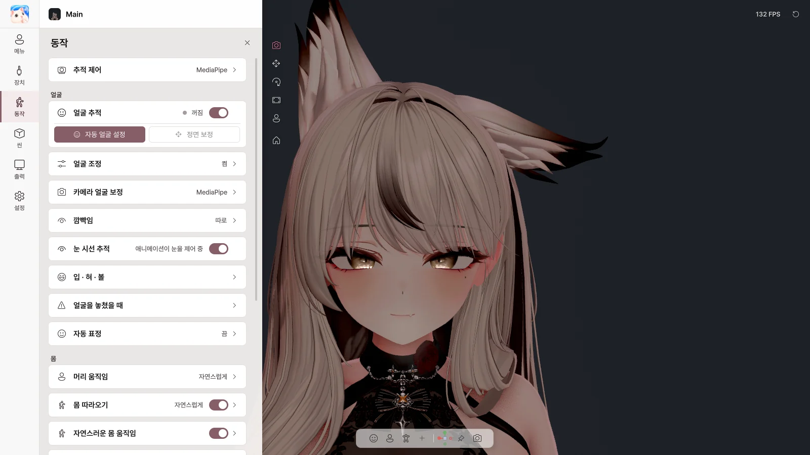

7. 동작#
동작 페이지에서 얼굴·몸·손이 어떻게 움직일지 정합니다. 설정은 아바타마다 따로 저장됩니다.

동작 페이지
추적 제어#
| 스위치 |
하는 일 |
| 미러 (거울처럼 움직이기) |
거울처럼 좌우를 맞추기 |
| 팔 / 손 / 손가락 |
웹캠으로 각 부위 움직이기 |
| 제스처 → 표정 |
손 모양을 아바타의 제스처 표정으로 |
| 항목 |
하는 일 |
| 얼굴 추적 |
얼굴 표정 트래킹 켜기 / 끄기 |
| 자동 얼굴 설정 |
안내를 따라 표정을 지으면 내 얼굴에 맞게 자동 조정 |
| 정면 보정 |
지금 얼굴 방향을 정면으로 |
Avatar Live는 아바타가 가진 얼굴 트래킹 설정(VRCFaceTracking, ARKit·MMD 쉐이프키, VRChat Eye Look·LipSync)을 찾아서 그대로 씁니다. 따로 세팅할 필요가 없습니다.
자동 얼굴 설정#
 자동 얼굴 설정
자동 얼굴 설정
화면 안내에 따라 무표정, 눈 감기, 입 벌리기, 말하기, 웃기, 입술 오므리기, 볼 부풀리기, 혀 내밀기, 시선 이동을 차례로 하고 측정을 누릅니다. 끝나면 적용을 누르세요.
- 이전 / 건너뛰기 / 취소로 단계를 옮깁니다.
- 첫 단계에서 보는 곳이 아바타의 정면 시선이 됩니다. 방송할 때처럼 화면을 보세요.
- 얼굴을 밝게 비추면 더 정확합니다.
얼굴 조정#
| 항목 |
하는 일 |
| 얼굴 값 조정 사용 |
조정 값 적용 켜기 / 끄기 |
| 왼쪽·오른쪽 함께 편집 |
한쪽을 바꾸면 반대쪽도 같이 |
| 스무딩 |
떨림 줄이기 |
| 값 목록 (눈 · 눈썹 · 입 · 볼·코) |
각 표정이 얼마나 크게 나올지 조절 |
| 이 값 초기화 / 모든 값 초기화 |
처음 상태로 |
카메라 얼굴 보정#
카메라 쪽 기준을 맞춥니다. 모든 아바타에 공통입니다.
| 슬라이더 |
바꾸는 것 |
| 눈 감김 기준 |
어느 정도 감아야 눈을 감은 것으로 볼지 |
| 입 최대 열림 기준 |
어느 정도 벌려야 입을 다 벌린 것으로 볼지 |
| 윗니가 보이는 기준 |
윗니가 보이기 시작하는 정도 |
| 웃을 때 윗니 가리기 |
웃을 때 윗니가 덜 보이게 |
| 좌우 / 상하 시선 범위 |
눈동자가 움직이는 범위 |
| 볼 부풀림 최대 기준 |
볼 부풀림의 최대 크기 |
깜빡임#
| 항목 |
하는 일 |
| 방식 |
따로 (눈마다, 윙크 가능) / 동기화 (두 눈 함께) / 스마트 (평소 함께, 윙크는 따로) |
| 깜빡임 세기 / 반응 |
얼마나 감기는지, 얼마나 빨리 반응하는지 |
| 고급 |
좌우 세기, 감고 뜨는 속도 |
눈 시선 추적#
눈동자가 시선을 따라가게 합니다.
입 · 혀 · 볼#
| 항목 |
하는 일 |
| 입 미터 |
지금 립싱크 상태 |
| 자동 레벨 |
목소리 크기에 맞춰 입 크기 자동 조절 (끄면 감도로 직접) |
| 마이크 → 얼굴 트래킹 |
목소리를 얼굴 트래킹의 입에도 쓸지 |
| 음성 보정 |
모음 버튼을 누르고 발음해 내 목소리에 맞추기 → 음성 프로필 저장 |
혀 · 볼 부풀림#
| 항목 |
하는 일 |
| 이름 스위치 |
지금 바로 켜기 |
| 카메라로 감지 |
카메라로 혀·볼을 알아보기 (자동 얼굴 설정 후 사용) |
| 키 |
단축키로 켜기 (누르는 동안 / 눌러서 켜고 끄기) |
혀·볼 부풀림의 카메라로 감지는 정상 동작을 예상하지만 모든 얼굴·카메라에서 테스트되지 않은 실험적 기능입니다.
얼굴을 놓쳤을 때#
| 항목 |
하는 일 |
| 마지막 표정 유지 |
잠깐 놓쳤을 때 표정 유지 시간 |
| 무표정으로 돌아가는 시간 / 다시 잡혔을 때 전환 시간 |
표정이 바뀌는 부드러움 |
| 자동 깜빡임 / 자동 시선 움직임 / 카메라 바라보기 |
얼굴이 안 보이는 동안의 눈 움직임 |
| 항목 |
하는 일 |
| 머리 트래킹 |
머리 움직임 켜기 / 끄기 |
| 세기 |
작게 / 자연스럽게 / 크게 |
| 몸 따라오기 |
가슴·척추가 머리를 자연스럽게 따라가기 |
| 자연스러운 몸 움직임 |
가만히 있어도 살짝 움직이기 |
| 호흡 |
숨쉬는 움직임 |
| 머리 대기 움직임 |
트래킹하지 않을 때 머리가 조금씩 움직이기 |
손 · 책상#
책상 동작#
손이 카메라에 안 보일 때, 실제 키보드·마우스 입력에 맞춰 아바타 손이 타이핑하고 마우스를 움직입니다.
🔒 키보드 입력은 아바타 손을 움직이는 데만 씁니다. 입력한 글자는 저장·기록·전송하지 않습니다.
| 항목 |
하는 일 |
| 책상 동작 |
켜기 / 끄기 |
| 손 기본 자세 |
책상 높이·거리, 손 간격, 팔꿈치, 손목, 손가락 굽힘 |
| 손 기본 자세 미리보기 |
자세 확인 |
| 키보드 입력 반응 |
타이핑할 때 손가락·손·손목 움직임 크기 |
| 마우스 입력 반응 |
마우스 손(오른손 / 왼손 / 자동), 움직임·클릭 크기 |
| 내 마우스 자세 |
지금 자세를 마우스 자세로 저장 |
추적이 끊겼을 때#
손이 안 보일 때의 자세를 고릅니다: 키보드 / 책상 · 마지막 자세 유지 · 옆으로 편하게 · 아바타 애니메이션 · 내 자세
- 손을 내리면 손 기본 자세로 — 손을 내리면 카메라에 보여도 기본 자세로
고급 설정#
| 항목 |
하는 일 |
| 머리 · 몸 세부 조정 |
머리 회전·위치 세기, 몸 따라오기 세부 |
| 타이핑 스타일 |
은은하게 / 자연스럽게 / 크게 |
| 얼굴 호환성 |
아바타가 가진 얼굴 트래킹 설정 확인 |
| 얼굴 출력 |
자동 (권장) / VRCFT 우선 / Perfect Sync 우선 |
| 쉐이프키 최대값 |
쉐이프키별 최대 크기 제한 |
최종 업데이트: 2026-10-09